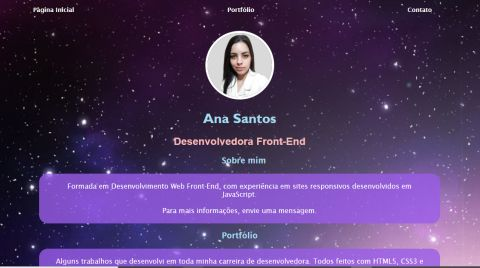
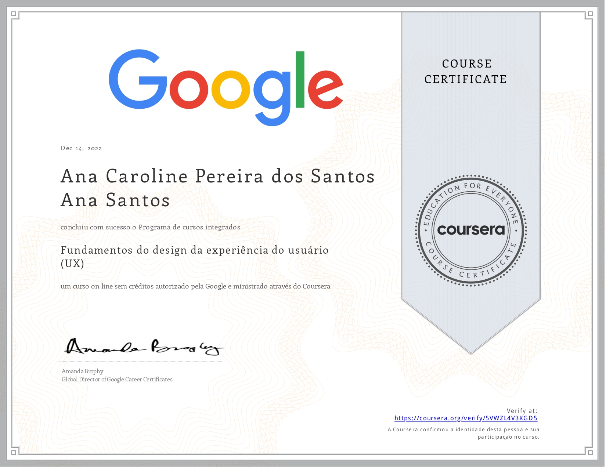

Portfólio
Alguns trabalhos que desenvolvi na minha caminhada como desenvolvedora. Todos feitos com HTML5, CSS3 e JavaScript.
Site ótica
Trabalho realizado durante o projeto Elas na Tech, onde trabalhei com HTML5, CSS3 e JavaScript.

Portfólio para finalização de curso
Projeto de finalização do curso Elas na Tech. Nele usei todo conhecimento que adquiri no curso, colocando um papel de parede no fundo do site, usando slide de fotos e vídeos com JavaScript.

Curso Ux design
Para aprimorar meus conhecimentos, decidi me aventurar no mundo de Ux Design aprendendo a projetar sites e aplicativos pensando na melhor experiência para o usuário.